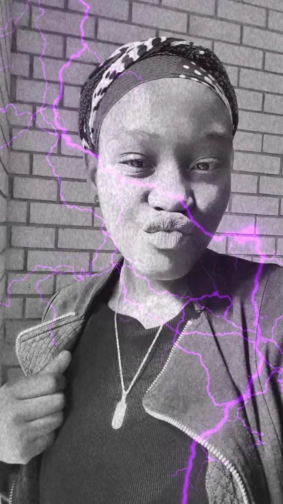

Hlalefang Anna Tsoeu | WDD 130

Hello there! I am 21 year old Hlalefang Tsoeu, a girlie living in the city of Gauteng, South Africa. I love watching cooking shows and reality TV. I enjoy listening to music and hanging out with my family and friends. I am a little bit short but that's okay because my height has become one of my favorite qualities about myself. I also enjoy boardgames and trying new things. I am an open minded person and love to learn new things. My favourite artist is shawn Mendes, Mimi Webb,Ayra Starr, Tate McRae, James Artur and Jordin Sparks. Besides listening to music I love to bake. I can bake cakes,cookies, home-made bread, pizza, even though people say you cook pizza. Lol. Iam a member of a book club and there's 3 of us.Just me and my 2 besties. We read for the plot to be real. I also love flowers, especially the bright ones. Those are my definite faves, I'm not going to lie.